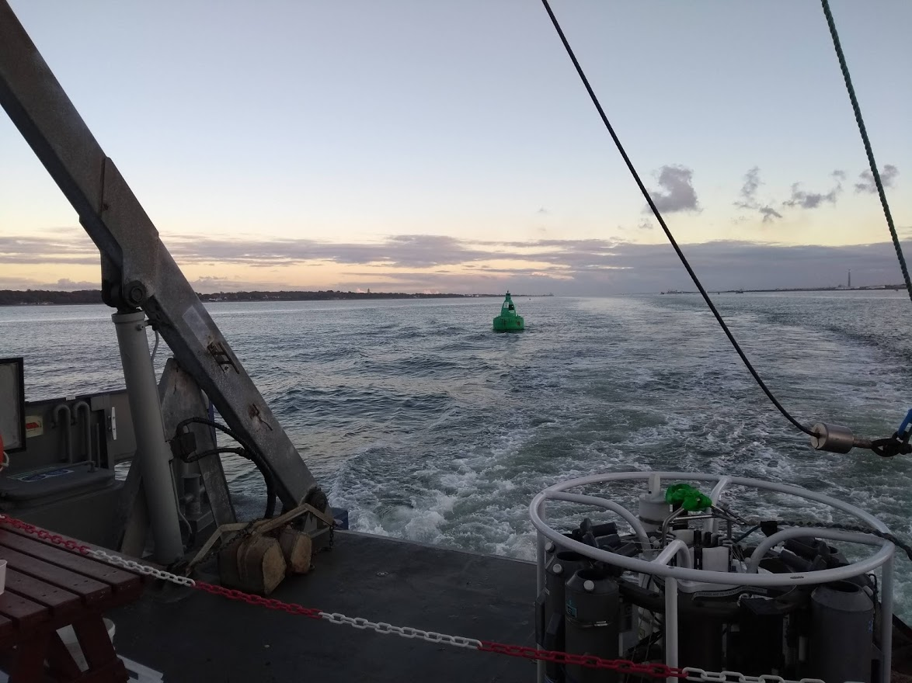

Posted on December 20, 2020
I don't know a single person who has said 2020 has been a good year. Unique - most certainly! But good?? Whilst there have been joyful moments, I think we can all agree it's not exactly been great. As 2020 now draws to a close, I've decided to summarise what has been a very chaotic and stressful year for researchers, including myself, across the UK and the world. Without further ado, let's cast our minds to happier times. It begins in January 2020.
The year got off to a positive start. Work was going well. I had discussed and formalised a plan for my first research paper for publication with my supervisors (and co-authors). I was finishing my plotting and analysis of the observational datasets I use and moving to the planning and executing of the Lagrangian particle tracking experiments. This was a huge learning curve and has proved to be much more fiddly and time consuming than I was expecting. Getting particles to be released in appropriate locations near to the seabed caused endless problems. However, I battled through and made good progress. I was spurred on by the rapidly approaching research cruise I was volunteering for, my first and only taste of a "proper" expedition during my PhD.
As January became February, I was still happy with my work progress. I managed to have a healthy work-life balance. If you didn't already know, I like nothing more than going for a nice long walk in my weekends. January and February were no different to normal. I regulary attended the weekly Saturday day walks with the Hillwalking Club and even a wonderful weekend Away Trip: where we stayed part-cave, part-bunkhouse in the Peak District. On a different note (pun intended...), I even managed to attend one music gig with a couple of friends this year: the talented Billy Lockett perfoming at The Joiners in Southampton. Little did I know that this would be the end of socialising as we were used to...
A cheese and port evening with some SUHC members in the Don Whillans Memorial Hut in The Roaches, Peak District, pre-COVID restrictions.
View to Back Tor from the Mam Tor bridleway, Peak District.
On the 2nd March I flew from Gatwick to Tenerife, under the shadow of Tenerife's first reported cases of COVID-19 in a hotel on the south coast. This was my first visit to the Canary Islands and only my 3rd ever trip abroad. At that time, the locals and tourists were still going around as normal. The trams, buses, beaches, bars and restaurants were packed. As for me, I had a wonderful 4 days exploring the North-Eastern end of the island, including some fantastic solo hikes around the mountains of the Anaga Rural Park. Unknown to me, this was to be my last holiday before a while.
My one and only holiday of 2020: view when out hiking, looking towards Mt Teide.
Holiday complete, it was time to "cruise". I boarded the RRS James Cook for the first time on the 6th March. Our mission: to service the RAPID array moorings at 26 degrees North, between the Canaries and Florida. We set sail, after mobilisation and a short delay, on Monday 9th. We were due to dock in Fort Lauderdale, Florida, USA, in 6 weeks time. However, 2020 had other ideas. If you haven't seen it already, you can find the long version of cruise events in this article for Ocean Wave called The Last Ship. To summarise, we were recalled just 2 weeks into our scientific cruise due to the increasing global COVID cases and the closure of many ports as a result. A 10 day steam to Southampton followed (with dolphin entertainment and a slight detour to drop a fellow scientist off at Ifremer, Brest, France), arriving on the 28th March. Whilst it being hugely sad that my only taste of fieldwork was cut short, I really enjoyed my time on board and learned a huge amount about observational data collection and processing. Talking with the scientists, technicians and crew about sea-going research in general, mooring deployment and recovery, initial data processing and the operation of the research ship itself has certainly given me a new appreciation of oceanographic datasets! It's safe to say that the cruise was without a doubt the best thing that has happened this to me this year.
All aboard the RRS James Cook!
Lockdown 1 was already in full swing when we arrived in Southampton. Fortunately, we had missed the worst of the panic buying and the Great Loo Roll Shortage. After a hasty demobilisation, scientists and technicians left the ship and made their way home. That is where I remained until October. PhD work slowed considerably, limited by the speed of my home internet connection to access my remote files and systems. I continued to work on the particle tracking experiments, successfully running some large 2-year hindcasts with several million particles. Whilst working from home was not ideal (I certainly prefer the office environment for a variety of reasons), I plodded on slowly yet methodical. That was until the start of September, when the main computer system I use had a major "upgrade". This resulted in the software I use not working anymore. Since my last blog update, I have most things working again but there are a few residual problems with my particle tracking software and the system I submit the model runs to. Progress has been slow over November and into this month and the official deadline for the Confirmation (a key progression milestone of the PhD course) has now passed. At times, I've felt like I haven't got anywhere with my work. I realise my problems are not huge compared to some PGR and even undergraduate students I know, yet the problems have left me feeling worried about my lack of progress and generally demotivated.
It hasn't all been doom and gloom since returning from the RAPID cruise. I'm still organising a weekly "PG Coffee" event via Discord for NOCS-registered PGRs. It's just a half-hour opportunity for an organised break, with a bit of a chat and some short games as well. In other good news, I was very excited to see the Physical Oceanography Research Group at the University would be having monthly meetings, something that hasn't happened in a long while. This has introduced me to many new people I didn't know were in the department, as well as providing a base for a monthly seminar series on people's specific research areas. I've also done a lot of "demonstrating" this semester: this is essentially the role of a teaching assistant for those at different universities calling it different things. I really enjoy the teaching side and the move to online teaching has been an interesting challenge. As well as virtual teaching, I've been lucky enough to do some in-person demonstrating on board the university vessel RV Callista: socially distanced and COVID secure, of course. It was really nice to interact with real people for a change!
Sailing back to NOCS up Southampton Water on RV Callista after a successful 3 hour undergraduate teaching trip.
This concludes my overly long ramblings (sorry) on a stressful year. I'll leave it for you to decide if I'm any good at this "blogging"! Now, it's time for me to have a bit of a break during this Christmas period. I'm trying to reset my brain and refresh myself for a new year ahead. I hope everyone manages to have a wonderful Christmas/New Year/Winter break. See you in 2021!
All photos: Matt Clark
Back to top ↑ Blog Home Website Home